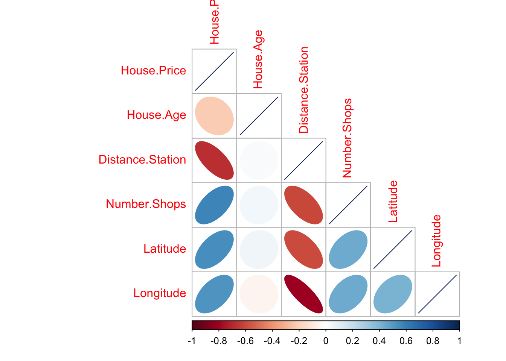

Penn State STAT-462 2021
1
Tutorials
1.1
Tutorial 1A: Installing R and R-studio
1.1.1
Open R-studio
1.1.2
Change a few settings
1.2
Tutorial 1B: Creating and loading R projects
1.2.1
What are projects?
1.3
Tutorial 1C: R coding basics
1.3.1
Using R as a calculator
1.3.2
Adding text
1.3.3
Comparisons
1.3.4
What if I press Enter too soon?
1.3.5
Variables and assignment
1.3.6
Functions
1.4
Tutorial 1D: Packages
1.5
Tutorial 1E: R Markdown basics
1.5.1
What is R-markdown?
1.5.2
Creating a markdown document
1.5.3
“Friendly text”
1.6
Tutorial 2A: Getting help in R
1.6.1
Help on a specific command
1.6.2
Finding a command name
1.6.3
Asking the internet:
1.6.4
General help & cheatsheets
1.7
Tutorial 2B: Markdown formats
1.7.1
Editing YAML code
1.7.2
Text formats
1.8
Tutorial 2C: Selecting & summarising data
1.8.1
Data.frame introduction
1.8.2
Selecting individual values
1.8.3
Selecting a single column
1.8.4
Selecting mulitple columns
1.8.5
Selecting subsets of rows/observations
1.8.6
Looking at summary tables
1.8.7
Basic plots (one variable)
1.9
Tutorial 2D: Distributions and tests
1.9.1
Normal distribution
1.9.2
Student’s t-distribution
1.9.3
Wilks Shapiro test for normality
1.10
Tutorial 3A - Editing code chunks
1.11
Tutorial 3B - Regression Models
1.11.1
“Standard” regression output
1.11.2
“Fancy” OLSRR regression output
1.12
Tutorial 4A: Plotting in ggplot2
1.13
Tutorial 4B: Identifying/removing outliers
1.14
Tutorial 4C Writing equations in R-Studio
1.14.1
In Markdown
1.14.2
Using Equatiomatic
1.15
Tutorial 5A ANOVA
1.15.1
Base R
1.15.2
Using OLSRR
1.16
Tutorial 5B Diagnostics part A
1.16.1
Residual plots
1.17
Checking Linearity
1.18
Checking Normality
2

3
Lab 1
3.1
Getting started
3.1.1
Why is this class in R?
3.1.2
Installing R and R-studio
3.1.3
Open R-studio
3.1.4
Change a few settings
3.2
Lab challenge 1
3.2.1
What are projects?
3.3
R coding basics
3.3.1
Variables and assignment
3.3.2
Functions
3.3.3
Packages
3.4
Lab Challenge 2
3.5
Markdown & Exploratory Analysis
3.5.1
What is R-markdown?
3.5.2
Creating a markdown document
3.5.3
“Friendly text”
3.6
Lab Challenge 3
3.7
Submitting Lab 1 {Section.L1.7}
3.7.1
Lab 1 submission check
4
Lab 2
4.1
General information
4.2
Tutorials
4.3
Setting up your code
4.4
Markdown formatting and YAML
4.5
Confidence intervals
4.6
Hypothesis testing
4.7
Exploratory data analysis
4.8
Submitting Lab 2
4.8.1
Lab 2 submission check
5
Lab 3
5.1
Lab 3 General information
5.2
Installing new packages
5.3
Lab 3 Setup & Markdown
5.4
Regression basics
5.5
Taiwan housing challenge.
5.6
Submitting Lab 3
5.6.1
Lab 3 submission check
6
Lab 4
6.1
Lab 4 General information
6.2
Lab 4 Setup & Markdown
6.3
Public safety spending
Checking folder names
Reading in the data
Analysis
6.4
Submitting Lab 4
6.4.1
Lab 4 submission check
7
Lab 5
7.1
Lab 5 General information
7.2
Lab 5 Setup & Markdown
7.3
Submitting Lab 5
7.3.1
Lab 5 submission check
Published with bookdown
STAT-462 Lab book
Chapter 2